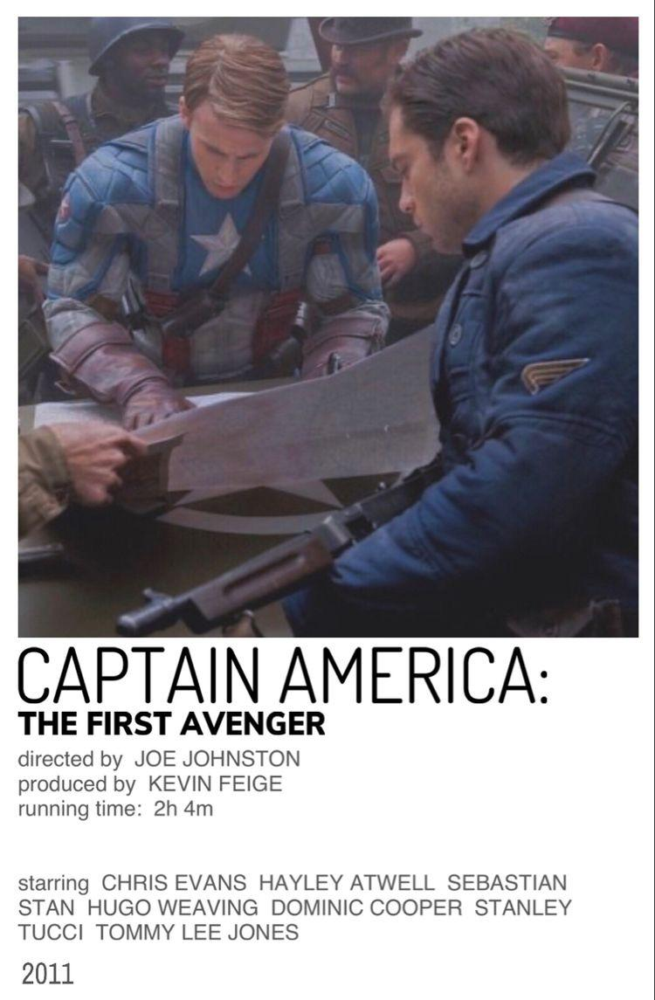
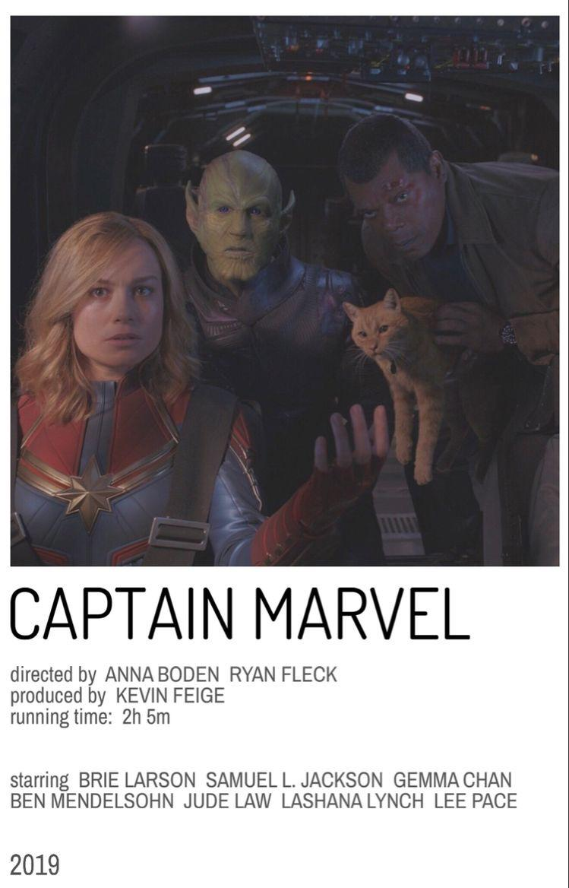
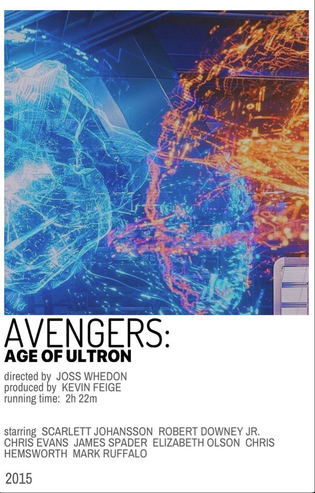
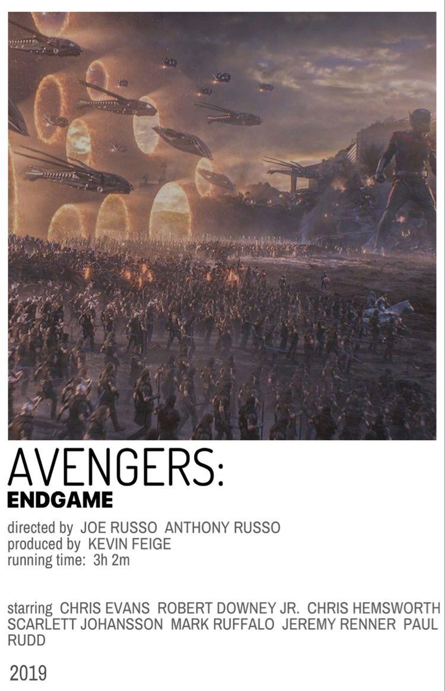

Capitán América: El Primer Vengador
 Unos científicos de la organización llamada S.H.I.E.L.D. se encontraban en el Ártico cuando descubren los restos de un avión sepultado en el hielo, entonces ellos entran en el avión y se encuentran con un objeto circular metálico congelado de color rojo, blanco y azul con una estrella blanca en el centro, entonces el encargado de ese grupo menciona que era lo que estaban buscando.
Capitana Marvel
 En 1995, en el planeta Hala, capital del Imperio Kree, la guerrera y miembro de la Fuerza Estelar Vers sufre de pesadillas recurrentes que involucran a una mujer mayor. Yon-Rogg, su mentor y comandante, le advierte mientras entrenan que controle sus habilidades, y a su vez la Inteligencia Suprema, una inteligencia artificial orgánica que actúa como gobernante Kree, la insta a mantener sus emociones bajo control.
La Era de Ultrón
 Los Vengadores se reúnen de nuevo y juntan sus fuerzas con las de los recién llegados Quicksilver y Bruja Escarlata para luchar contra un robot maquiavélico llamado Ultrón, el cual Tony Stark creó con el fin de defender la paz, pero resultó defectuoso y ahora pretende exterminar a toda la humanidad
End Game
 Los Vengadores restantes deben encontrar una manera de recuperar a sus aliados para un enfrentamiento épico con Thanos, el malvado que diezmó el planeta y el universo.